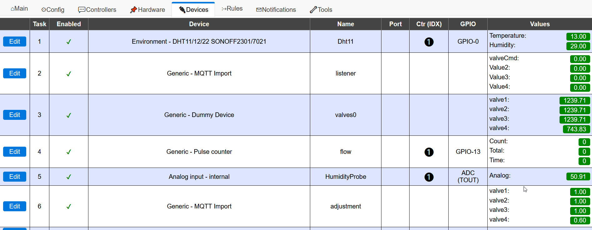
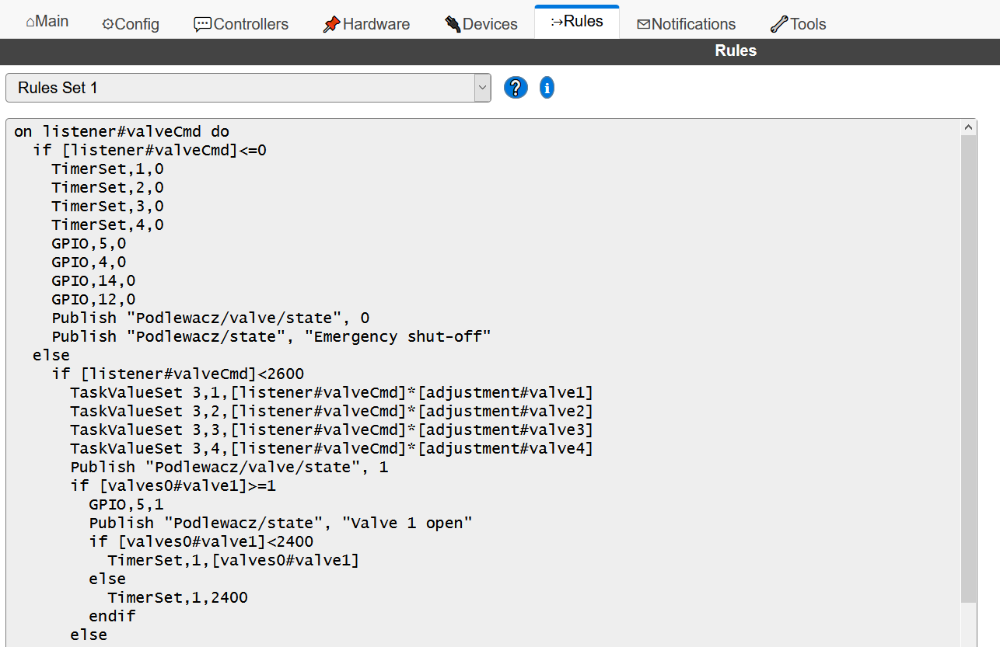

Praktyczne zastosowania ESP8266
- Maciej Małecki -
- Marcin Iwanczewski -
Historia układu

- ESP-01
- Ai-Thinker
- 2014
Możliwości układu:
- WiFi i stos TCP/IP,
- Procesor RISC 32-bit, 80MHz,
- Pamięć RAM: 32KiB kod, 80KiB dane,
- Pamięć Flash: 512KiB, 1MiB, 4MiB, 16MiB - zależnie od wersji,
- 16 GPIO, z reguły dostępne 10, 5 dostępne w pełni,
- jeden port ADC (rozdzielczość 10-cio bitowa).
ESP-8266 - wyjścia

- VCC, GND - zasilanie,
- RESET - podciągać do 3v3 i zwierać do GND,
- ADC - port analogowy, toleruje 0.0-1.0V,
- EN/CH_PD - chip wake up (podciągać do 3v3),
- TXD,RXD - interfejs SPI (wgrywanie firmware'u, komunikacja szeregowa),
- GPIOx - cyfrowe piny we/wy.
ESP-8266 - użyteczność portów GPIO

Dostępne modele
ESP-01
ESP-07
ESP-12
NodeMCU v2/v3
Wemos D1 Mini
Wemod D1 Mini Pro
Wersje pudełkowe
Sonoff Basic


Sonoff Basic (R1) piny

Sonoff 4CH

Sonoff 4CH piny

Sonoff Slampher

Sonoff Slampher piny

Shelly1

Shelly1 piny

Firmware
ESP Easy
Interfejs webowy

Obsługa do 12 urządzeń / tasków
Język reguł
